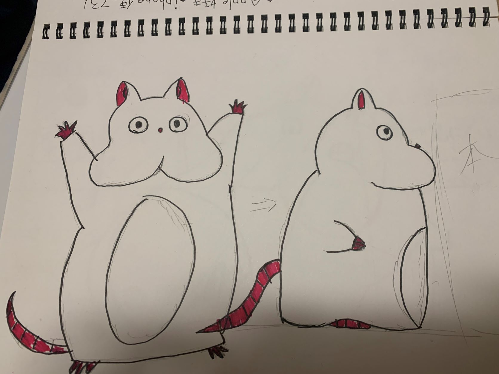
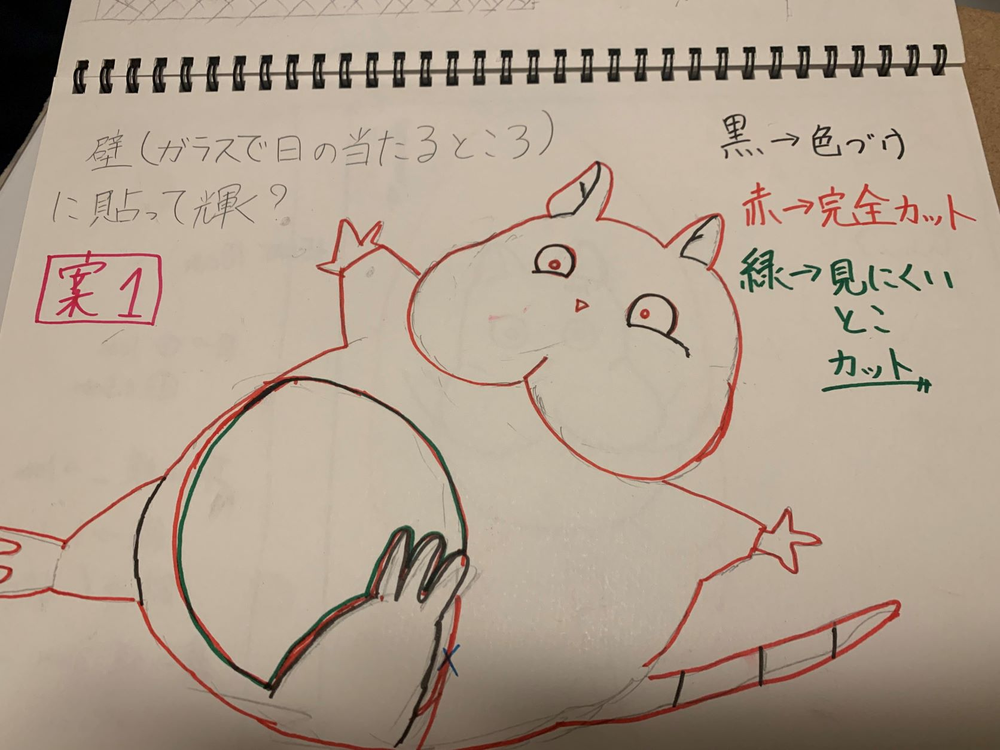
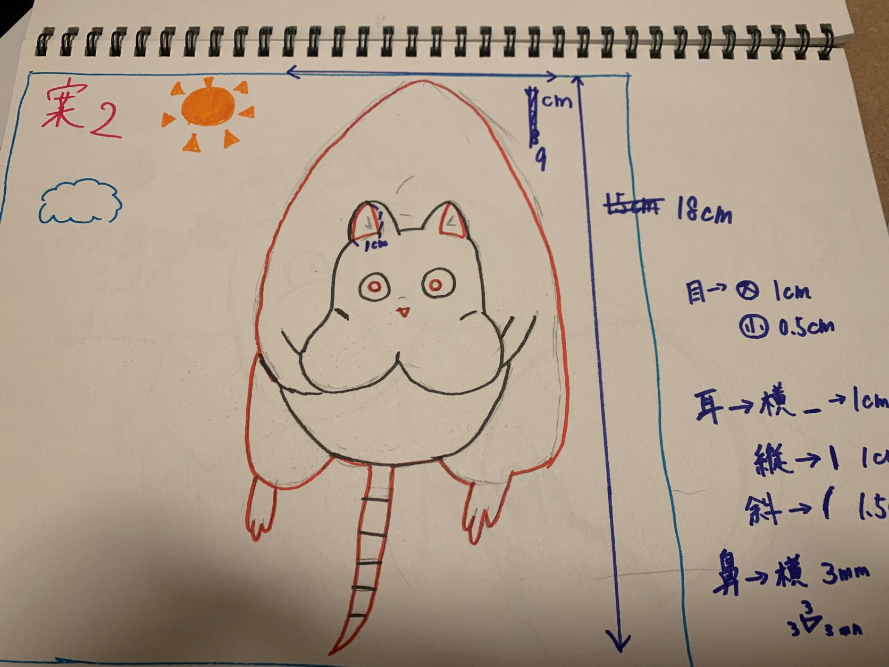
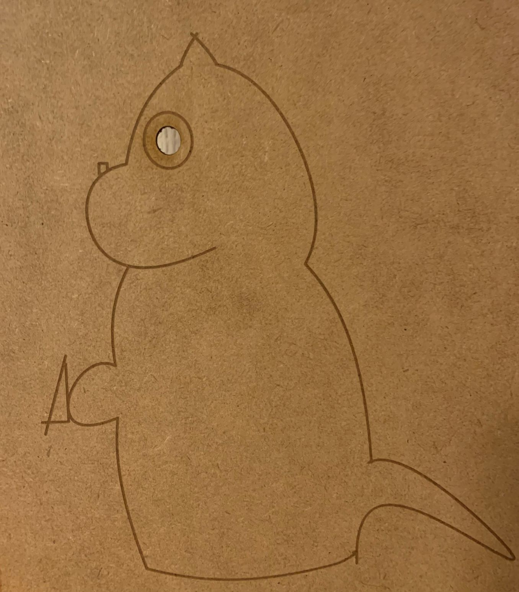

光を使った壁アート~千と千尋の神隠しの坊のネズミモチーフ～
構想段階のスケッチ

作品

作品の説明
壁に飾って太陽の光を使って部分的に光らせるを制作した。目の部分以外にもカットする部分を作って見ようと思ったが、時間が足りずできなかった。
なぜこれを作ろうと考えたのか
最初はコースターを作ろうと思っていたが、みんなできそうなので変更し、シンシンさんが光を使っているというところに目を魅かれ、自分も光を使って作ろうと思いました。壁に貼に貼り、太陽の光を使うモノができればいいじゃんと思い、この作品を制作しました。また、デザインはできるだけ愛嬌のあるものにしたいな～と思い、自分も好きな千と千尋の神隠しの坊というキャラクターがネズミになった姿を書いた。